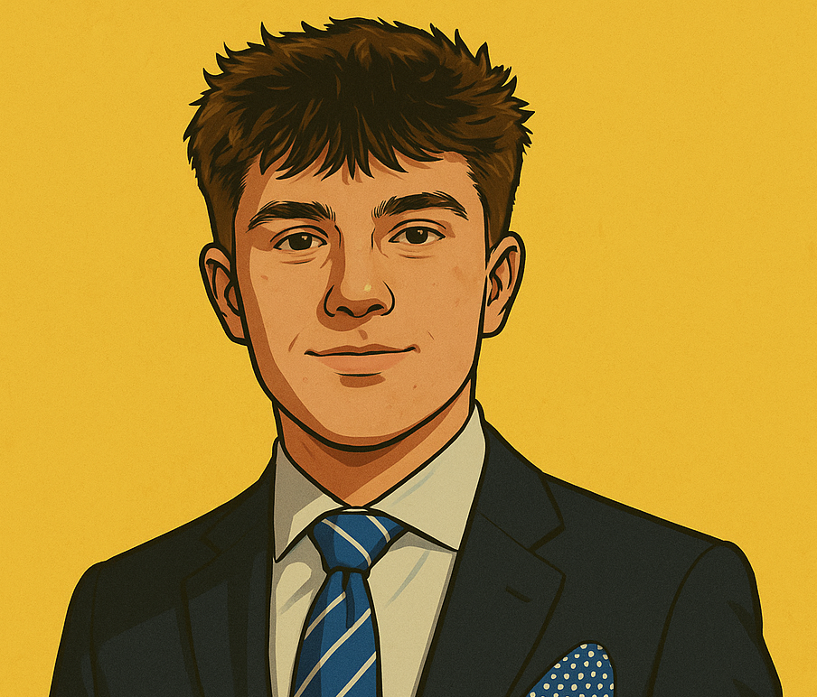
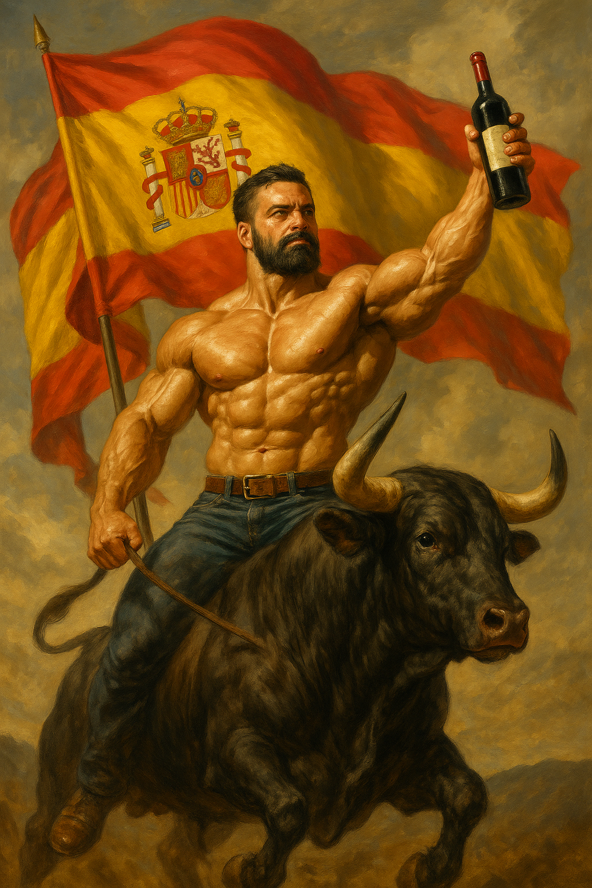

¿Porqué surgió?
La idea surge através de la falta de concienciación sobre la información falsa.
El pilar de la información
¡Informate ahora!Todo lo que necesitas saber sobre nosotros.
La idea surge através de la falta de concienciación sobre la información falsa.
Los integrantes del proyecto hemos considerado la idea de realizar diferentes redes donde os podreis ir informando sobre nuestras diferentes actividades , aunque es en esta página donde hemos publicado nuestro periódico.
Bienvenidos a "Sol Español": El Periódico de la Verdad. En un mundo saturado de información, donde la verdad parece diluirse entre un mar de noticias falsas y desinformación, surge un bastión de integridad periodística: "Sol Español". Con un compromiso inquebrantable con la verdad y la transparencia, nuestro periódico se erige como un faro de confianza en medio de la tormenta de la desinformación. En "Sol Español", nuestra misión es clara: eliminar las fake news y proporcionar a nuestros lectores una visión imparcial y precisa de los eventos que dan forma a nuestro mundo. No nos conformamos con los titulares sensacionalistas ni con las medias verdades. Nos esforzamos por investigar a fondo cada historia, verificar cada dato y presentar la información de manera justa y precisa. Con un equipo de periodistas comprometidos con la ética y la excelencia, "Sol Español" se compromete a ofrecer una cobertura informativa que no solo informe, sino que también eduque y empodere a nuestros lectores. Creemos que el acceso a la verdad es fundamental para una sociedad informada y democrática.
Periódico

El jefe de diseño en un periódico se encarga de crear la apariencia visual del periódico, desde la portada hasta las páginas interiores, asegurando que sea atractiva y coherente. También supervisa la selección de imágenes, el desarrollo de gráficos y la gestión del equipo de diseño para cumplir con los plazos. Su objetivo es garantizar que el diseño refleje la identidad visual del periódico y sea compatible con diferentes formatos de distribución.

El jefe de redacción es el líder editorial de un medio de comunicación. Coordina el equipo de redactores, asigna noticias, supervisa la calidad y el estilo de la escritura, y toma decisiones sobre qué historias se publican y cómo se presentan. Su objetivo principal es garantizar que el contenido del medio sea preciso, relevante y coherente con la línea editorial.

El jefe de digitalización en un periódico se encarga de dirigir la estrategia digital del medio. Esto implica supervisar la adaptación de contenido para plataformas en línea, como el sitio web y las redes sociales. También coordina el uso de tecnología para mejorar la experiencia del usuario, aumentar el alcance y la participación, y maximizar los ingresos digitales. Su objetivo es asegurar que el periódico esté a la vanguardia en el ámbito digital y aproveche al máximo las oportunidades en línea.
El director de un periódico es el máximo responsable editorial y administrativo. Supervisa todas las operaciones del medio, desde la producción de noticias hasta la gestión del personal y las finanzas. Toma decisiones estratégicas sobre la dirección editorial, la cobertura de noticias y la distribución. Su objetivo es garantizar que el periódico cumpla con los estándares de calidad periodística, sea rentable y mantenga su relevancia en el mercado.

En esta sección daremos a conocer cosas relacionadas con el instituto ; noticas , reportajes ...
En esta sección hablaremos sobre el patrimonio cultural de nuestro centro , el cúal presume de mucho material histórico. En esta sección hablaremos de actualidad, cultura y tendencias pensadas para jóvenes como tú.
En esta sección tocaremos temas relacionados con la zona en la que cada uno de los integrantes vive o esté relacionado.
En esta sección daremos información variada relacionadas con la cultura actual como por ejemplo películas , libros ...
En esta sección se hablará sobre el deporte , pero en el entorno de nuestro centro , con deportistas de nuestro centro. Aquí hablamos sobre las noticias relacionadas con este tema , aunque tambien pueden incluirse reportajes , artículos etc En esta sección se hablará de temas relacionados con la mujer (obviamente relacionado con nuestro entorno)  Aqui se tocaran temas muy variados y no relacionados entre sí.
La información verdadera hace conocimientos reales.
Sección de ''Patrimonio''
Sección de ''Jóvenes'''
Sección de ''Mi barrio'''
Sección de ''Cultura'''
Sección de ''Deportes'''
Sección de ''Ciencia y Tecnología''
Sección de ''La Mujer'''
Nuestras Viñetas


Diferentes secciones en una.
¡Informaté ahora!